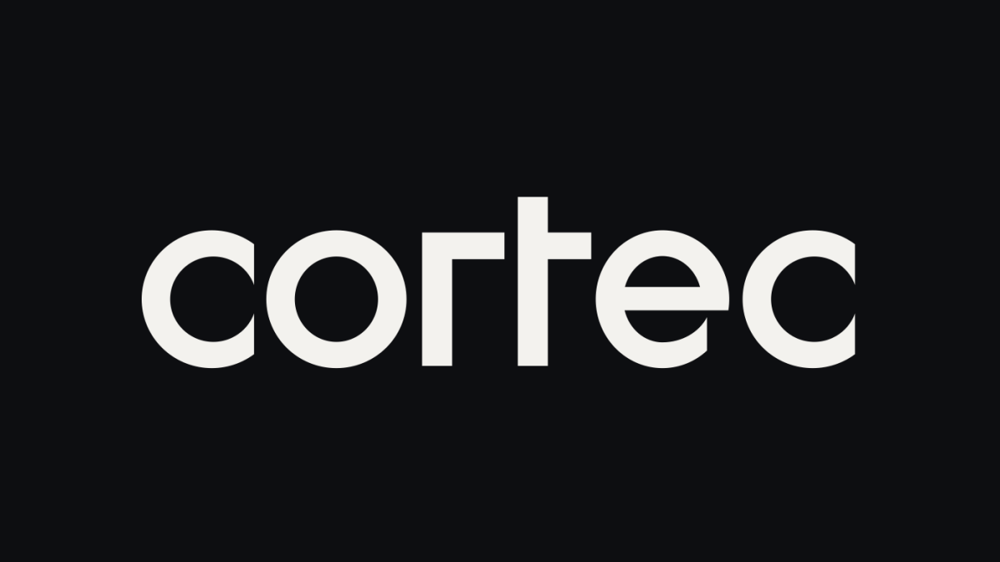
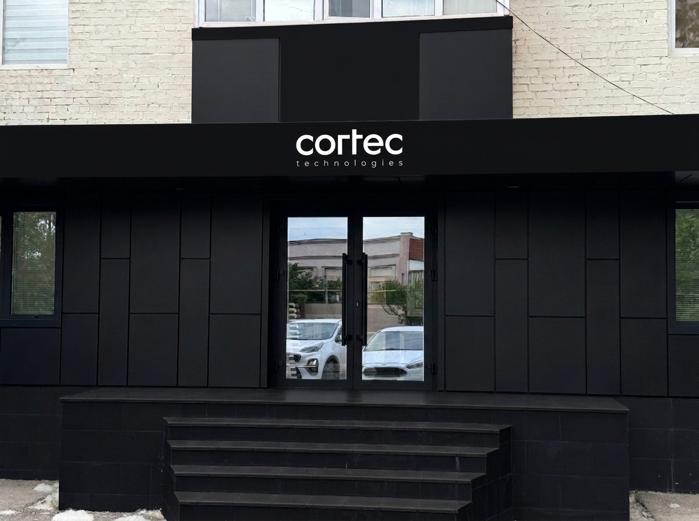
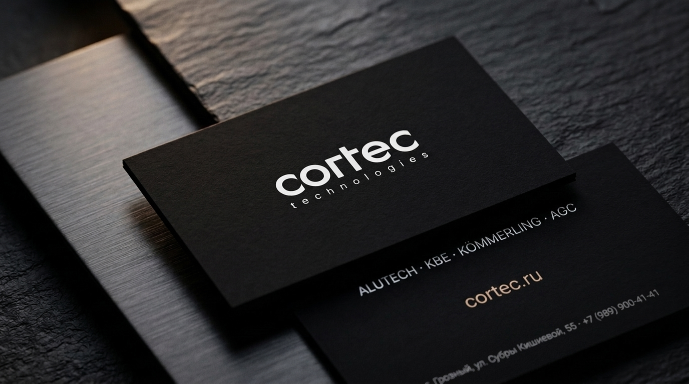
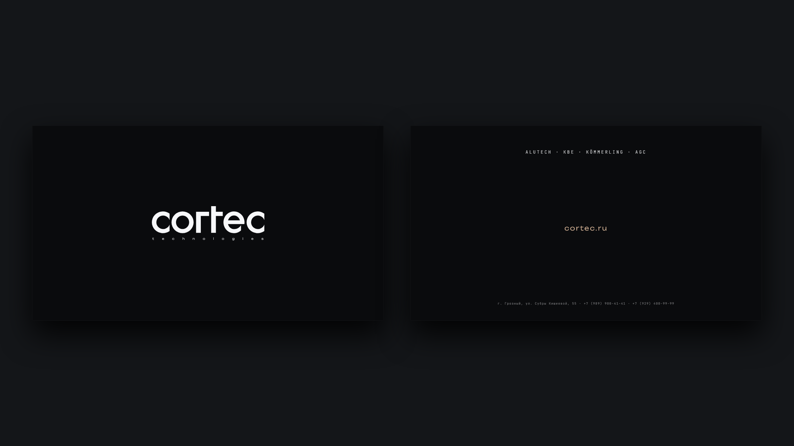
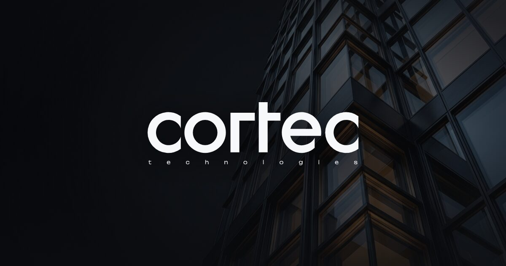

Дизайн-система и айдентика CORTEC.
Тихий архитектурный минимализм в коде и в материи.
Единый реестр дизайн-токенов, типографических шкал, интерактивных компонентов и физических носителей бренда cortec technologies. Любое изменение в src/styles/01-tokens.css или src/data/site.js мгновенно синхронизируется по всем страницам.
Геометрия логотипа cortec technologies
Основной знак строится на оптической инверсии геометрического гротеска с разрядкой дескриптора technologies ровно по ширине слова cortec.

Палитра матового обсидиана и анодированной бронзы
Нажмите на любую карточку токена, чтобы скопировать CSS-переменную var(--ds-*) в буфер обмена.
Матовый обсидиан (фасад шоурума, матовые визитки Plike, код-блоки)
Основной фон страниц (анодированный темный графит)
Поверхность карточек брендов, инженерных узлов и таблиц
Приподнятые поверхности в состоянии фокуса / наведения
Основной архитектурный белый для заголовков и ключевых цифр
Инженерный наборный текст (оптимальный контраст на темном фоне)
Полутоновый акцент .halftone для вторых частей заголовков
Микро-типографика: индексы, подписи узлов, нижний колонтитул визитки
Теплый анодированный песочно-бронзовый акцент (ховеры, линии, бейджи)
Светлый блик анодированной бронзы для активных состояний
Типографическая иерархия Unbounded · Onest · JetBrains Mono
Интерактивные элементы и карточки брендов
Макро-компонент renderBrandShowcase() (4 бренда из src/data/brands.js):
Архитектурный алюминий: стоечно-ригельные и структурные фасады ALT F50, порталы SL160 и окна W72.
История и системы ALUTECH ↗ Берлин · Германия · 1980Берлинская школа экструзии: многокамерные системы KBE 76 / 88 мм, рецептура greenline и графитовый контур.
История и системы KBE ↗ Пирмазенс · Германия · 1897Более 125 лет немецкой инженерии: 7-камерная система 88 мм, алюминиевые оклады AluClip Zero и порталы PremiDoor Lux.
История и системы KÖMMERLING ↗ Токио · Брюссель · 1907Мировой лидер архитектурной оптики: магнетронное серебро Stopray, кристальное стекло Planibel Clearvision и триплекс Stratophone.
История и стекло AGC ↗Физические носители: матовый чёрный фасад и визитки
Все физические носители выдержаны в едином матовом чёрном цвете (#0A0B0D) с компактным логотипом cortec technologies.

Монолитный чёрный фасад с компактным знаком cortec technologies
Полностью чёрные композитные панели, переплёты и верхний балконный пояс с лаконичным логотипом по центру фриза.
Скачать визуализацию фасада (JPG) ↓

Матовые визитки: чистое лицо и минималистичный оборот
На обороте — только 4 бренда (ALUTECH · KBE · KÖMMERLING · AGC), сайт cortectech.pro по центру и микро-текст 5 pt внизу.
Скачать 3D-презентацию визиток (JPG) ↓

Плоская развёртка визитки для типографии (Лицо + Оборот)
Готовый макет в высоком разрешении (2400×1520 px) для шелкографии белой/серебряной краской по чёрному матовому картону.
Скачать печатный макет 300 DPI (PNG) ↓

Главное Open Graph превью (WhatsApp / Telegram)
Оптимизированная обложка (< 90 КБ) с логотипом cortec technologies поверх архитектурного фасадного узла.
Скачать OG-превью 1200×630 (JPG) ↓
Как расширять проект с расходом в 10 раз меньше токенов
# 1. Изменить телефоны, адрес, почту, меню или OG-превью на всех страницах сразу:
Правка 1 файла -> src/data/site.js
# 2. Изменить карточки брендов (ALUTECH, KBE, KÖMMERLING, AGC):
Правка 1 файла -> src/data/brands.js
# 3. Изменить цвета, шрифты или отступы дизайн-системы:
Правка 1 файла -> src/styles/01-tokens.css
# 4. Вставить адаптивную AVIF-картинку в любую страницу (1 строка вместо 7):
${pic('hero-volumetric-node', 'Описание узла', { prefix })}
# 5. Собрать продакшн-папку cortec-hosting-final/ и готовый архив cortec-hosting-final.zip:
node build.js